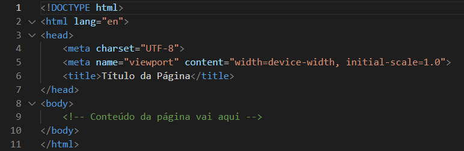
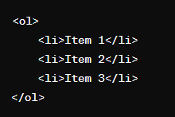
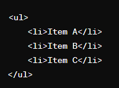

A história dos computadores é fascinante e abrange um longo período de inovação e desenvolvimento. Aqui está uma breve visão geral:
Antecedentes e Pré-história:
Os primeiros dispositivos mecânicos, como o ábaco, eram usados para cálculos rudimentares.
Muitos marcos na história, como a invenção do ábaco chinês e o astrolábio grego, contribuíram para a evolução do pensamento computacional.
Idade Média e Renascimento:
Avanços na matemática e na ciência, incluindo os trabalhos de matemáticos como Blaise Pascal e Gottfried Leibniz, influenciaram a teoria dos cálculos e das máquinas de calcular.
Século XIX:
Charles Babbage, um matemático britânico, concebeu a ideia de uma "máquina analítica", uma máquina mecânica programável.
Ada Lovelace, colaboradora de Babbage, é considerada a primeira programadora, por suas contribuições para o algoritmo da máquina analítica.
Século XX:
O advento dos computadores eletrônicos começou com máquinas como o ENIAC (Electronic Numerical Integrator and Computer), desenvolvido durante a Segunda Guerra Mundial.
Posteriormente, máquinas como o UNIVAC (Universal Automatic Computer) e o IBM 650 marcaram avanços significativos na computação comercial.
Era dos Microcomputadores:
O surgimento do microprocessador na década de 1970 possibilitou a criação de computadores pessoais, como o Altair 8800.
A popularização dos computadores pessoais acelerou-se com o lançamento do Apple II, Commodore PET e IBM PC.
Era Moderna:
A ascensão da Internet e da computação em nuvem revolucionou a computação, tornando a informação mais acessível e promovendo a colaboração global.
Tecnologias emergentes, como inteligência artificial, aprendizado de máquina e computação quântica, estão moldando o futuro da computação.
Essa é uma visão geral simplificada da história dos computadores. Cada período e avanço técnico trouxe mudanças significativas na forma como os computadores foram concebidos, construídos e utilizados.
Em termos de tecnologia da informação e redes de computadores, o termo "clientes" (ou "clients" em inglês) refere-se a dispositivos, programas ou sistemas que solicitam serviços, recursos ou informações de um servidor. Aqui estão alguns pontos importantes sobre clientes:
Solicitação de Serviços:
Os clientes são responsáveis por solicitar e receber serviços ou recursos de servidores. Por exemplo, um cliente da web (como um navegador da internet) solicita páginas da web a um servidor da web.
Interação com Servidores:
Os clientes interagem com servidores por meio de protocolos de comunicação. Por exemplo, um cliente de email utiliza o protocolo SMTP (Simple Mail Transfer Protocol) para enviar emails a um servidor de email e o protocolo POP3 (Post Office Protocol) ou IMAP (Internet Message Access Protocol) para receber emails desse servidor.
Diversidade de Plataformas:
Os clientes podem ser software instalado em computadores pessoais, dispositivos móveis, navegadores da web, sistemas embarcados, entre outros. Eles podem variar desde um aplicativo de chat em um smartphone até um sistema automatizado que solicita dados de um servidor remoto.
Funcionalidades Variadas:
Os clientes podem ter diferentes funcionalidades e interfaces, dependendo do serviço que estão acessando e das necessidades do usuário. Por exemplo, um cliente de email pode oferecer recursos como filtragem de mensagens, organização de pastas e envio de anexos.
Segurança:
Os clientes também podem ser responsáveis por implementar medidas de segurança, como autenticação e criptografia, para proteger a comunicação com os servidores e os dados transmitidos entre eles.
Em suma, os clientes desempenham um papel fundamental na comunicação e interação com os servidores em uma rede de computadores, permitindo que os usuários acessem e utilizem serviços e recursos remotos.
Servidores (ou "servers" em inglês) são computadores ou sistemas de computação dedicados a fornecer serviços, recursos ou informações para outros dispositivos, programas ou sistemas na rede. Aqui estão algumas características importantes dos servidores:
Fornecimento de Serviços:
Os servidores são projetados para fornecer serviços específicos para clientes ou usuários. Esses serviços podem incluir hospedagem de sites, armazenamento de arquivos, processamento de dados, compartilhamento de impressoras, gerenciamento de emails, entre outros.
Confiabilidade e Disponibilidade:
Os servidores são configurados para oferecer alta confiabilidade e disponibilidade, garantindo que os serviços estejam sempre acessíveis quando necessário. Isso muitas vezes envolve a implementação de redundância de hardware, sistemas de backup e soluções de tolerância a falhas.
Protocolos de Comunicação:
Os servidores usam protocolos de comunicação para interagir com os clientes e fornecer os serviços solicitados. Por exemplo, um servidor web usa o protocolo HTTP (Hypertext Transfer Protocol) para enviar páginas da web a um navegador da web.
Armazenamento de Dados:
Muitos servidores são usados para armazenar e gerenciar grandes volumes de dados. Isso pode incluir bancos de dados, arquivos de mídia, documentos empresariais e muito mais.
Processamento de Dados:
Alguns servidores são projetados para realizar tarefas intensivas de processamento de dados, como cálculos complexos, simulações ou análises. Esses servidores podem ser configurados com hardware e software otimizados para essas tarefas específicas.
Segurança:
A segurança é uma preocupação fundamental para os servidores, especialmente aqueles que armazenam dados sensíveis ou críticos. Isso envolve a implementação de medidas de segurança, como firewalls, sistemas de detecção de intrusões, criptografia e controle de acesso.
Em resumo, os servidores desempenham um papel essencial na infraestrutura de rede, fornecendo serviços e recursos que são acessados por clientes e usuários em toda a rede. Eles são projetados para serem confiáveis, disponíveis e seguros para garantir um funcionamento suave dos sistemas e aplicativos que dependem deles.
A estrutura básica de um documento HTML (Hypertext Markup Language) geralmente inclui os seguintes elementos:

Aqui está uma breve explicação de cada parte:
<DOCTYPE html>: Esta declaração define o tipo de documento e a versão do HTML que está sendo usada. Neste caso, html indica que é um documento HTML5.
<html lang="pt-br">: Este é o elemento raiz do documento HTML e contém todo o conteúdo da página. O atributo lang especifica o idioma do documento, neste caso, português do Brasil.
<head>: Esta seção contém metadados sobre o documento, como o título da página, a codificação de caracteres, metatags para SEO, folhas de estilo CSS, scripts JavaScript, entre outros.
<meta charset="UTF-8">: Este meta tag define a codificação de caracteres utilizada no documento. UTF-8 é uma codificação amplamente suportada que inclui uma ampla gama de caracteres.
<meta name="viewport" content="width=device-width, initial-scale=1.0">: Este meta tag é utilizado para controlar o dimensionamento e a exibição da página em dispositivos móveis. Ele define a largura da viewport para ser igual à largura do dispositivo e define o nível de zoom inicial como 1.0.
<title>Título da Página</title>: Este é o título da página, que é exibido na barra de título do navegador ou na aba do navegador.
<body>: Esta é a seção principal do documento, onde o conteúdo visível da página é colocado.
Esse é o esqueleto básico de um documento HTML. Você pode adicionar conteúdo entre as tags <body> e </body> para construir o conteúdo da sua página, como texto, imagens, vídeos, links e outros elementos HTML.
As listas ordenadas e não ordenadas são dois tipos de listas em HTML, cada uma com sua própria finalidade e estilo de apresentação. Aqui está a diferença entre elas:
Listas Ordenadas (<ol> - Ordered List):
As listas ordenadas são utilizadas quando a ordem dos itens é importante.
Os itens são numerados automaticamente em sequência numérica, por padrão, começando com "1".
A marcação para uma lista ordenada é feita com a tag <ol>, e cada item é marcado com a tag <li> (list item).
Exemplo:
Listas Não Ordenadas (<ul> - Unordered List):
As listas não ordenadas são utilizadas quando a ordem dos itens não é importante.
Os itens são marcados com símbolos padrão, como pontos, quadrados ou círculos, por padrão.
A marcação para uma lista não ordenada é feita com a tag <ul>, e cada item é marcado com a tag <li> (list item), da mesma forma que em listas ordenadas.
Exemplo:

Em resumo, a principal diferença entre listas ordenadas e não ordenadas está na forma como os itens são apresentados visualmente. Enquanto as listas ordenadas são numeradas sequencialmente, as listas não ordenadas são marcadas com símbolos padrão.